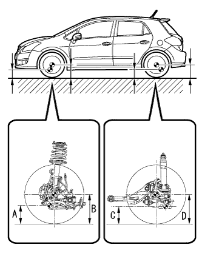
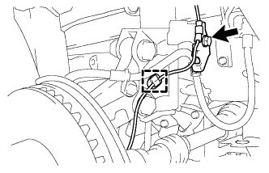
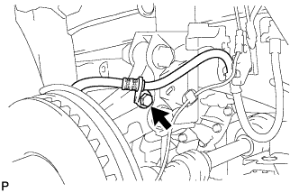
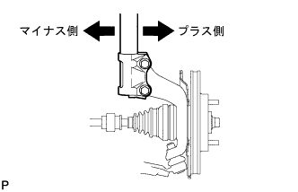
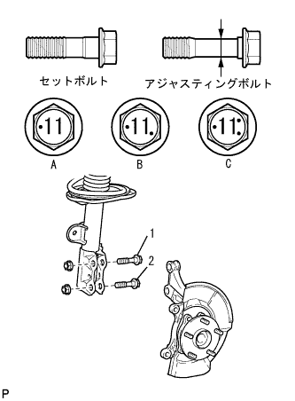
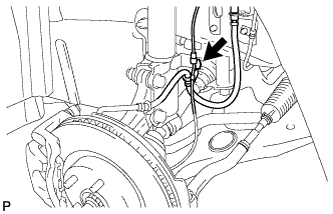
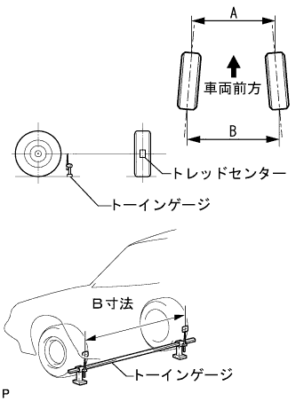
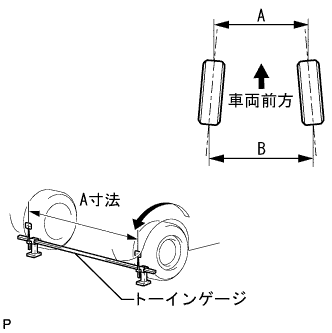
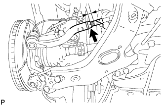
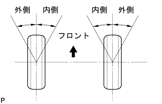

Front Wheel Alignment Adjustment |
for reference.for reference.| 1. Tire Inspection |
Inspect the tire size and wear condition
Inspect the tire pressure
| Tire Size | Tire pressure (front wheels) [{ kgf/cm2} ] | Tire pressure (rear wheels) [{ kgf/cm2} ] |
|---|---|---|
| 205/55R16 | 210(2.1) | |
| 225/45R17 | 230(2.3) | 210(2.1) |
Inspect for suspension modifications and damage to chassis parts
Inspect the tire runout
Inspect the tightening condition of the bolts of related parts
Inspect the related parts for looseness
| 2. Vehicle Height Inspection |
 |
Bounce the corners of the vehicle up and down to stabilize the suspension before inspecting the vehicle height.
| Tire Size | B measurement - A measurement [mm] | D measurement - C measurement [mm] |
|---|---|---|
| 205/55R16 | 101 (FF drive) 102 (4WD drive) | 60 |
| 225/45R17 | 98 | 60 |
| 3. Inspect Camber, Caster and Steering Axis Inclination |
Lift up the vehicle on a level surface.
Install SST (tire clamp compensator).
Set the turning radius gauge and lower the vehicle.
Inspect the camber, caster and steering axis inclination.
| Vehicle Model | Drive Type | Camber | Caster | Steering Axis Inclination |
|---|---|---|---|---|
| AZE156H system | FF | -0°10'±45' | 5°50'±45' | 12°10' |
| AZE154H system | 4WD | -0°10'±45' | 5°50'±45' | 12°00' |
| GRE156H system | FF | -0°10'±45' | 5°50'±45' | 12°00' |
Remove the camber-caster-kingpin gauge and tire clamp compensator.
| 4. Adjust Camber |
Jack up the vehicle and remove the front tire.
 |
Remove the bolt and clamp, and disconnect the speed sensor FR LH.
 |
Remove the bolt and disconnect front brake flexible hose No.1.
 |
Loosen the 2 lower side mounting nuts of the front shock absorber assembly LH.
 |
Move the lower side of the shock absorber and adjust the camber using the play between the bolts and the bolt holes of the steering knuckle.
|
Tighten the 2 nuts.
Install the flexible hose and speed sensor with the bolts.
Install the speed sensor FR LH with the bolt and clamp.
Install the front tire.
Lower the vehicle and bounce it up and down several times to stabilize the suspension.
Inspect the camber.
If the result is within the specified range, inspect the toe-in.
If the result is not within the specified range, jack up the vehicle, remove the front tire, disconnect the speed sensor and flexible hose, and perform the following procedure.
Support the front axle with a jack and wooden block.
Remove the 2 lower side mounting nuts and 2 bolts of the shock absorber.
 |
Select 2 adjusting bolts and insert them from the front of the vehicle.
| Adjusting Bolt | Part No. | Bolt diameter (mm) | Adjustment Amount |
|---|---|---|---|
| A | 90105-17009 | 15.9 | ±15’ |
| B | 90105-17010 | 15.0 | ±30’ |
| C | 90105-17011 | 14.0 | ±45’ |
| Camber Adjustment Amount | Set Bolt | 90105-17009 | 90105-17010 | 90105-17011 |
|---|---|---|---|---|
| -1°30'--1°15' | 1,2 | |||
| -1°15'--1°00' | 1 | 2 | ||
| -1°00'--45' | 1 | 2 | ||
| -45'--30' | 1 | 2 | ||
| -30'--15' | 1 | 2 | ||
| -15'-0' | 1 | 2 | ||
| 0'-15' | 1 | 2 | ||
| 15'-30' | 1 | 2 | ||
| 30'-45' | 1 | 2 | ||
| 45'-1°00' | 1 | 2 | ||
| 1°00'-1°15' | 1 | 2 | ||
| 1°15'-1°30' | 1,2 |
|
Install the 2 nuts.
 |
Install front brake flexible hose No.1 with the bolt.
Install the speed sensor FR LH with the bolt and clamp.
Install the front tire.
Lower the vehicle and bounce it up and down several times to stabilize the front suspension.
Inspect the camber again.
| 5. Side Slip Inspection |
Inspect the side slip using a side slip tester.
If the result is not as specified, inspect the wheel alignment.
| 6. Toe-in Inspection |
Bounce the vehicle to stabilize it.
Push the vehicle forward 5m in a straight line by hand.
 |
Align the height of the toe-in gauge pointer with the height of the front wheel axle center, and place it behind the tires.
Mark the tread center at the rear of each front tire, and measure the distance between the marks (dimension B).
Slowly push the vehicle forward to rotate the front wheels 180°.
 |
Measure the distance between the marks at the front of the vehicle (dimension A).
Calculate the toe-in.
| Toe-in [mm] |
|---|
| 2±2 |
| 7. Toe-in Adjustment |
 |
Measure the lengths of the threaded portions of the left and right rack ends.
| Left-Right Difference [mm] |
|---|
| 1.5 or less |
Remove the rack boot clips.
Loosen the tie rod end lock nuts.
If the left-right difference of the rack end threaded portions is not as specified, adjust it.
If the toe-in measurement is off toward the toe-out side, adjust by extending the rack end with the shorter dimension.
If the toe-in measurement is off toward the toe-in side, adjust by shortening the rack end with the longer dimension.
Inspect the toe-in again.
Turn the left and right rack ends equal amounts in opposite directions to adjust the toe-in to within the specified range.
| Toe-in [mm] |
|---|
| 2±1 |
Tighten the tie rod end lock nuts.
Using pliers, install the clips to the steering rack boots.
| 8. Inspect Wheel Angle |
 |
Set the turning radius gauge.
Inspect the wheel angle.
| Vehicle Model | Drive Type | Inside (inspection range) | Outside (reference) |
|---|---|---|---|
| AZE156H system | FF | 39°17'±2' | 33°04' |
| AZE154H system | 4WD | 38°41'±2' | 32°52' |
| GRE156H system | FF | 35°45'±2' | 31°15' |
| 9. Check Front Wheels Straight-ahead Position |
| 10. Disconnect Battery Negative Terminal |
| 11. Connect Battery Negative Terminal |
| 12. Yaw Rate & G Sensor 0-point Acquisition and Test Mode Inspection |
)| 13. Steering Sensor 0-point Acquisition Check |
)| 14. Initialization after Battery Terminal Disconnection and Reconnection |
)